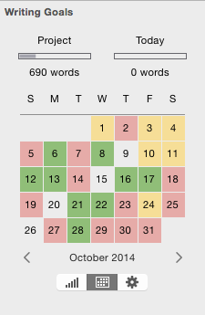
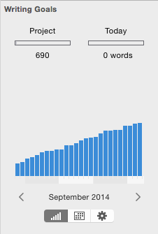

Storyist lets you set word count goals for both your daily writing sessions and your entire project, and tracks your progress over time.
To set word count goals:
The result will look something like this:
After you've set up your writing goals for the project, you can track your progress in several ways.
The calendar view shows you at a glance which days how you're doing on your daily writing goals. Days on which you've met or exceeded your goal are shown in green. Days on which you've achieved at least eighty percent of your goal are shown in yellow. The rest are shown in red.
To see the calendar view, show the Project info inspector as described in the Setting Word Count Goals section, and click the Calendar button.

Clicking on the left arrow shows the previous month. Clicking on the next arrow shows the following month. Clicking on the month name resets the calendar to the current date.
The graph view shows you a monthly graph of your word count.
To see the graph view, show the Project info inspector as described in the Setting Word Count Goals section, and click the graph button.

You can also configure the Status Bar to show both your total project word count and your progress toward that goal.
To do so: